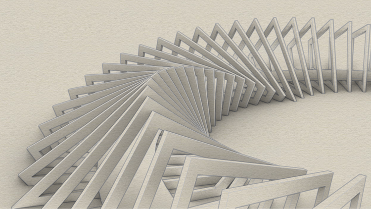
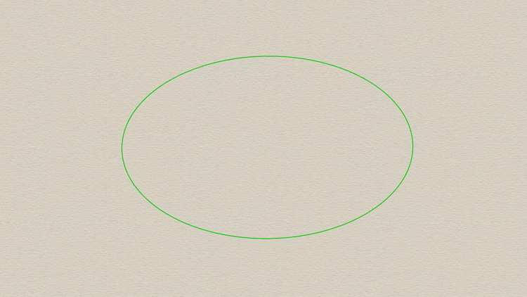
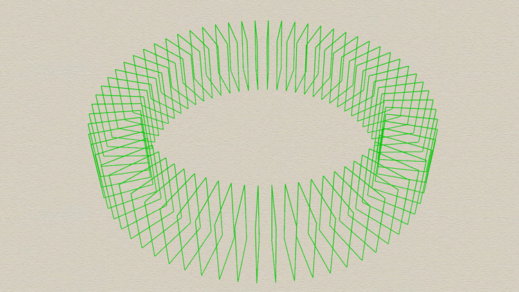
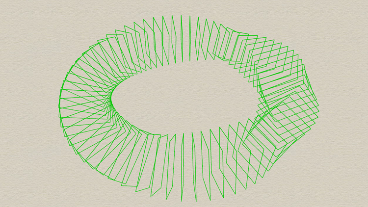
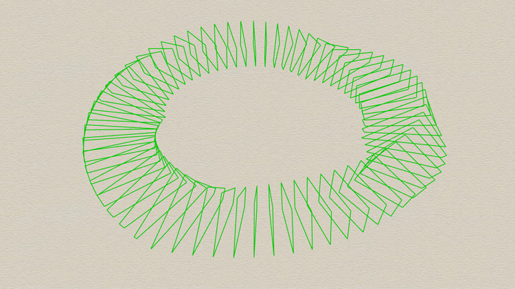
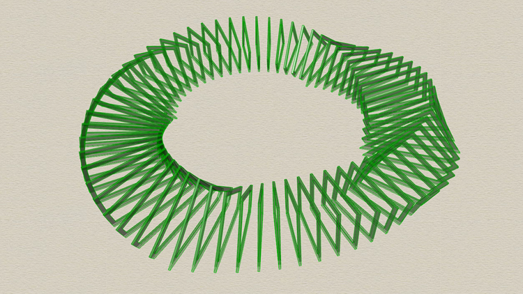
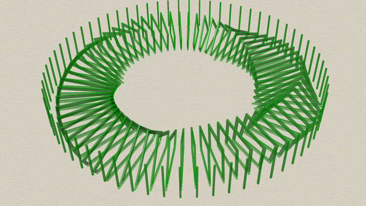

According to
wikipedia parametric design is a process based on algorithmic thinking that enables the
expression of parameters and rules that, together, define, encode and clarify the relationship
between design intent and design response.
In other words you design through understanding the design problem in terms of what the elements
that compose it mean to each other. This entails a much more thorough understanding of the design
problem, leading to deeper thinking of what the design problem means.

Image that shows a parametric model of the Ekko pavilion by Thilo Frank. Model and render by
Felipe Gutiérrez, produced in Grasshopper/Rhinoceros3d.
Practical Example
This pavilion is modeled through the understanding of the relations between the elements, in this
case those elements are the "frames" that grow radially while rotating. There is also an explicit
relation between the "floor" or world plane with the frames, as the floor cuts the frames, leaving
only the upper part of these frames.






As you can see the pavilion starts from a circle primitive, so all of the elements that compose
the pavilion will be modified when the radius of such circle is changed. We could call this model
paramateric as changing the radius parameter will create a new design in which the relations
between elements (for example the number of frames) will remain the same. There are other parameters
that have been defined for this definition, such as the width and height of the frame, the rotation
angle, the thickness of the elements and others.
The term parameter comes from the mathematical definition of a parametric equation, in which an end
result will change according to some initial parameters. Parametric design can be thought of an
algorithm/set of steps that produce a design, that can be modified by changing the original parameters
of such procedure.